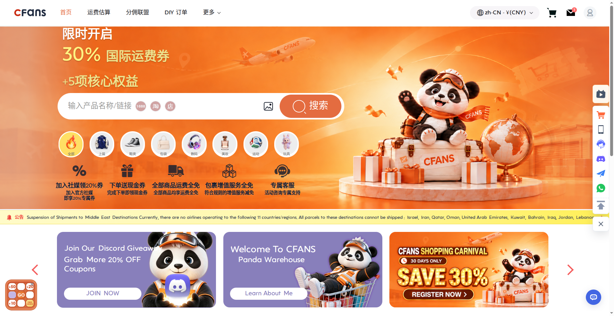
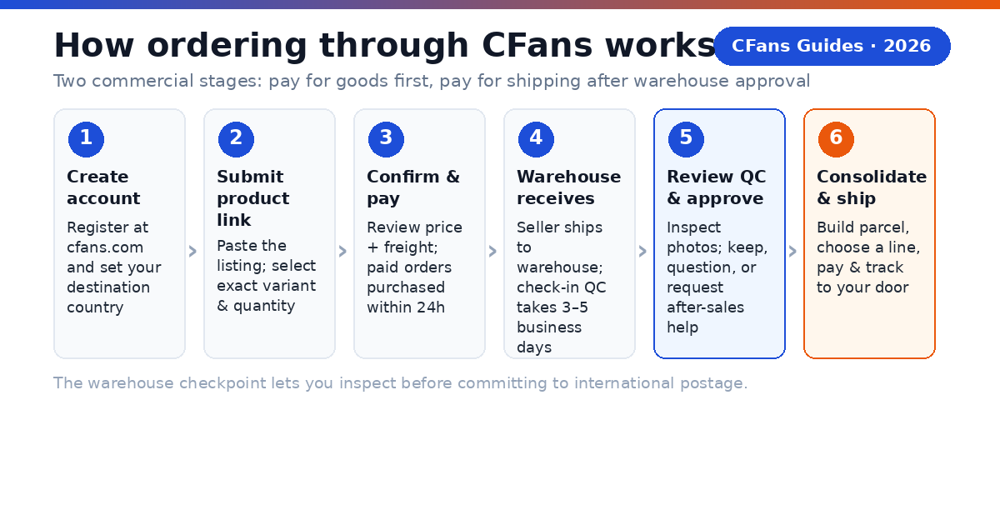
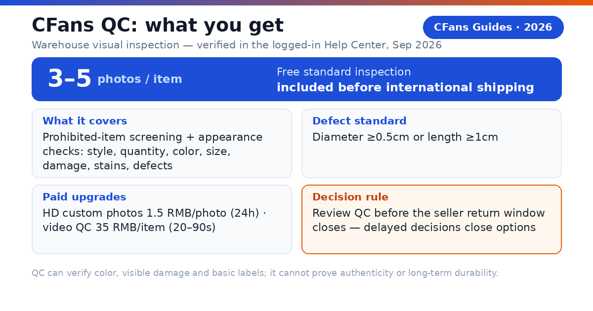
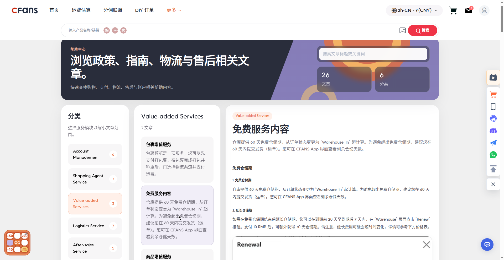
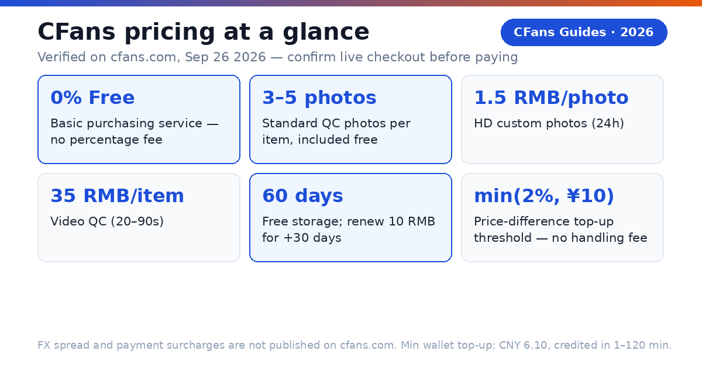

CFans is not the seller and not the final courier. It is the operating layer between the Chinese marketplace, the warehouse and your door.
That distinction explains both the value and the limits of any buying agent. CFans can place a domestic order, communicate with the seller, receive the goods, perform a visible inspection, combine purchases and present international shipping choices. It cannot manufacture a better product, guarantee that every seller is honest, eliminate customs risk or make every route equally fast.
This guide answers the questions a careful first-time customer should ask before paying: what CFans does, how the order process works, what quality checks can reveal, what the total cost includes, how long fulfilment can take and how to reduce risk.
Why do overseas buyers choose CFans?
Chinese marketplaces are designed primarily for domestic commerce. The buyer may face Chinese-only listings, local payment requirements, sellers that do not export and domestic couriers that stop at a Chinese address. CFans connects those steps into a usable cross-border process.

Purchase execution
You provide a product link and options such as size, color and quantity. CFans purchases from the seller and records the order in one dashboard.
Warehouse control
Different sellers can deliver to one Chinese warehouse. Items are checked and held before you decide what should travel together.
Visible quality check
Warehouse inspection can catch obvious defects, wrong colors, wrong sizes and missing pieces before international shipping makes a return difficult.
Consolidated export
You can combine eligible items, choose a route and track the parcel rather than managing separate international shipments from multiple sellers.
Who is CFans for?
CFans is designed for overseas shoppers and small buyers who already know what they want from China, but need help completing the purchase and delivery. It is especially relevant when the seller does not accept an international payment method, does not ship abroad, or when several marketplace orders should become one parcel.
What is the strongest reason to use it?
The strongest reason is not a coupon or a headline fee. It is the decision point inside China. After an item reaches the warehouse, you can review its recorded details and inspection images before committing to international postage. That checkpoint is valuable because returns are usually simpler while the product is still in the seller's domestic market.
How does ordering through CFans work?
The order has two commercial stages: first, you pay for the goods and China-side handling; later, after the items are in the warehouse, you pay for the international parcel. Keeping these stages separate lets the warehouse use actual package information and gives you time to inspect before export.

- Create an account. Register at cfans.com and set your destination country. Before funding anything, review the current user agreement, prohibited-items rules, storage period, refund conditions and account verification requirements.
- Submit the product link. Paste a listing from Taobao, 1688, Weidian or another supported source. Select the exact variant, quantity and notes. If the page cannot be parsed, a manual order may require the seller URL, specification and price.
- Confirm the item order. Review the product price, seller's domestic freight, any service charge and the payment total. This payment authorizes CFans to buy from the Chinese seller; it usually does not include international shipping.
- CFans purchases from the seller. The agent submits the domestic order and updates its status. Seller dispatch speed is outside the warehouse's control, so separate “agent processing” from “seller-to-warehouse transit” when estimating time.
- The warehouse receives the item. Staff match the delivery to your order, record it and move it into inspection and storage. If the parcel is incomplete or visibly damaged, use the order-level support channel rather than waiting until parcel submission.
What can delay the first half of the process?
- A seller marks an item as available but has not dispatched it.
- A marketplace order requires clarification, a price adjustment or additional domestic freight.
- The courier delivers during a peak period and warehouse intake queues grow.
- The received item lacks an order identifier or arrives in multiple domestic parcels.
When do you approve quality and pay for shipping?
- Review the quality-control record. Inspect the uploaded photos and the recorded size, color and quantity. Zoom in. Compare logos, alignment, labels, stitching, measurements and included accessories with the listing and your order notes.
- Approve, question or request after-sales help. If the item looks correct, keep it in storage. If something is wrong, contact support promptly about an additional photo, return or exchange. Eligibility, seller acceptance, deadlines and domestic return costs vary.
- Build a consolidated parcel. Select warehouse items that should ship together. Choose available packing services carefully: removing bulky packaging can cut volume, while reinforcement may protect fragile goods but add weight.
- Choose an international line. Compare the estimated charge, billing basis, delivery range, tracking, insurance, item restrictions and customs model. The cheapest line is not automatically the best line for valuable, fragile or time-sensitive goods.
- Pay, dispatch and track. Confirm the declared information and delivery address, pay the parcel charge, then follow tracking through export, customs and last-mile delivery. Save the parcel number and payment record until the shipment is resolved.
Why are there two payments?
The first payment funds the goods and China-side order. The second funds the international parcel after items arrive and can be weighed, measured and packed. A shipping calculator is therefore an estimate, not a guaranteed invoice: the final charge can change with actual or volumetric weight, route rules and added services.
How good is CFans quality control?
CFans says its warehouse quality check covers defects, size, color and other visible order details. That can prevent an obvious mismatch from traveling internationally. It is best understood as a warehouse visual inspection, not laboratory testing, professional authentication or a guarantee of long-term durability.

Verified detail (logged-in Help Center, September 26, 2026): the free standard inspection covers prohibited-item screening plus appearance checks (style, quantity, color, size, damage, stains, defects) with 3–5 photos per item; the defect standard is diameter ≥0.5cm or length ≥1cm. Paid upgrades: HD custom photos at 1.5 RMB/photo (24h) and video QC at 35 RMB/item (20–90s).
| QC can often help verify | QC usually cannot prove |
|---|---|
| Color and selected variant | Exact material composition |
| Visible damage or stains | Internal construction quality |
| Basic size labels | Fit on your body |
| Quantity and accessories | Electronics lifespan |
| Obvious print or stitching flaws | Brand authenticity |
What should you inspect in QC photos?
- Match the order: Confirm model, color, size, quantity and any customized option.
- Check symmetry and finish: Compare left and right sides, seams, edges, prints, hardware and alignment.
- Look for scale: Use ruler or measurement photos where fit or dimensions matter. A size label alone does not prove the garment's measurements.
- Check completeness: Verify laces, straps, chargers, manuals, dust bags, spare parts or other promised accessories.
- Compare with the listing: Do not rely on memory. Open your saved listing screenshot beside the warehouse images.
What happens if an item fails QC?
Raise the issue while the item is still in China. Explain the discrepancy precisely and attach the relevant listing evidence. Depending on the seller's policy and the timing, CFans may help request another photo, a return or an exchange. The seller may reject returns, charge domestic freight or apply a deadline, so “warehouse QC” should never be interpreted as automatic approval of every refund.
What does CFans cost?
A buying-agent bill is not one fee. The useful comparison is the amount required to get the parcel to your address, not the percentage printed beside “service fee.” A low headline fee can be outweighed by exchange-rate spread, payment charges, domestic delivery, optional warehouse work or an unsuitable shipping line.


What is the CFans True Total Cost formula?
| Cost layer | What changes it | When known |
|---|---|---|
| Merchandise | Seller price, quantity | Before order |
| China delivery | Seller and destination | Order stage |
| Agent service | Current fee policy | Checkout |
| FX/payment | Method, currency, rate | Payment |
| Warehouse extras | Repack, photo, protection | Before parcel |
| International freight | Route and billed weight | Parcel stage |
| Import charges | Country, value, goods | Customs/delivery |
Is there a purchasing service fee?
CFans' public Help Center states “Basic purchasing service = Free” — there is no percentage purchasing fee (verified on cfans.com, September 26, 2026). Optional value-added services are paid (for example, package preview, packing materials and photo/video upgrades), and the site states “No hidden fees. All costs are clearly displayed.” Confirm the live checkout for any category or promotion exceptions before publication.
What if the item price changes after payment?
If the seller's price moves, CFans tops up the difference once it reaches the threshold of min(2% of the item total, ¥10) — and “CFans charges no top-up handling fee” (verified in the logged-in Help Center, September 26, 2026). Purchase is completed within 24 hours after payment, and merchants usually ship within 3–7 days.
What may be free?
CFans includes standard quality inspection — 3–5 inspection photos per item depending on product category (verified on cfans.com, September 26, 2026) — and currently promotes some free value-added services for eligible parcels. “Free” should always be read with its eligibility conditions: standard inspection images are included while upgrades such as HD custom photos (1.5 RMB/photo), video QC (35 RMB/item), special packing or category-specific work may cost extra.
How do you calculate the real price of a haul?
This worked example shows the method, not a CFans quotation. CFans' basic purchasing service is free (0%), verified against cfans.com (public pages + logged-in session) on September 26, 2026; the FX/payment cost and freight figures below are illustrative assumptions, not CFans figures
| Example cost | Amount (CNY) |
|---|---|
| Items from several sellers | ¥1,000 |
| Domestic seller-to-warehouse freight | ¥40 |
| Service fee: basic purchasing is free (verified) | ¥0 |
| FX/payment cost (illustrative; rate not published) | ¥45 |
| Optional packing services | ¥20 |
| International shipping | ¥420 |
| Illustrative subtotal before import charges | ¥1,525 |
The agent fee here is ¥0 — international freight (¥420) is the dominant cost. This is why optimizing parcel volume and route choice may save more than comparing service fees between agents.
How can you control the total?
- Estimate before buying: Use realistic weights and dimensions, not the smallest possible product weight.
- Consolidate selectively: Combine items when this avoids repeated base charges, but do not make a parcel so large that route choices narrow or risk rises.
- Remove volume carefully: Shoe boxes and retail packaging can increase volumetric weight, but removing them may reduce protection or resale value.
- Compare like for like: Match insurance, tracking, speed, customs treatment and restrictions when comparing lines.
- Reserve for customs: Duties, taxes and carrier handling charges may be payable outside CFans and are not always included in the parcel quote.
All amounts above except the ¥0 purchasing fee are hypothetical and illustrative; CFans' FX rate, payment charges and per-kg freight are not published on cfans.com (public pages + logged-in session). Verified example shipping quotes (1000g, logged-in estimation tool, Sep 2026): USA line ¥250.85 (8–12 days), UK line ¥162.40 (9–12 days), Germany line ¥171.10 (8–13 days) — not a fixed price list.
How does CFans shipping work?
Once approved items are stored in the CFans warehouse, you select which ones to place in a parcel. The warehouse packs them together, calculates a final or adjusted charge under the chosen route, hands the parcel to a logistics provider and records tracking for the international journey.
Why does consolidation save money?
Several separate shipments can repeat minimum charges and packaging weight. Consolidation can turn multiple domestic orders into one international parcel, reducing duplicated overhead. The saving is not automatic: a very bulky or heavy combined parcel may move into a higher billing band or lose access to a route.
What is billed weight?
Carriers commonly charge the greater of actual weight and volumetric weight. Volumetric weight converts package dimensions into a billable number. The divisor varies by line, so the same box can produce different quotes. Rehearsal packing or an updated estimate can help when a parcel contains lightweight but bulky goods.
How long does CFans shipping take?
The total wait has several clocks: agent purchase, seller dispatch, China domestic delivery, warehouse intake and QC, parcel processing, international transit, customs and last-mile delivery. CFans publishes an order-response SLA — 09:00–18:00 → response within 6 hours, 18:00–09:00 → processed by next day 14:00, and purchase completed within 24 hours after payment; merchants usually ship within 3–7 days (verified on cfans.com's public Help Center and logged-in session, September 26, 2026). Domestic arrival → warehouse check-in QC takes 3–5 business days, and the logged-in estimation tool quotes example transits at 1000g: USA line 8–12 days (¥250.85), UK line 9–12 days (¥162.40), Germany line 8–13 days (¥171.10) — example quotes, actual quotes vary ±5–10% and by weight/line, not a fixed price list. Verify the live route estimate before publishing or promising a delivery date.
| Line (1000g example) | Quote | Transit | Weight / size limits |
|---|---|---|---|
| USA line | ¥250.85 | 8–12 days | 500g–20000g; longest <45cm, second <40cm, shortest <25cm; volumetric L×W×H÷6000 |
| UK line | ¥162.40 | 9–12 days | 100g–18000g; ≤60 / ≤45 / ≤45cm; volumetric ÷6000; commercial clearance |
| Germany line | ¥171.10 | 8–13 days | 100g–30000g; ≤120 / ≤60 / ≤60cm; volumetric ÷8000 |
Example quotes at 1000g from CFans' logged-in estimation tool, Sep 2026; actual quotes vary ±5–10% and by weight/line — not a fixed price list.
| Clock | Main dependency | Your control |
|---|---|---|
| Seller dispatch | Stock and seller | Choose reliable listing |
| Warehouse intake | Queue and matching | Clear order details |
| Parcel processing | Packing services | Approve promptly |
| International transit | Line and capacity | Choose route |
| Customs | Country and inspection | Accurate declaration |
| Last mile | Local carrier | Correct address |
Is CFans legit - and how should you verify it?
CFans presents a functioning buying-agent workflow on cfans.com: product-link ordering, a China warehouse, quality checks, consolidation, international delivery and account support. That establishes what the service says it does; it does not remove the need to evaluate a specific seller, route or transaction.
Use a five-part trust check
- Start at the correct domain. Type or bookmark cfans.com. Similar brand names and unofficial spreadsheets can confuse buyers.
- Read live terms before paying. Check refund deadlines, storage limits, restricted goods, compensation rules, insurance exclusions and current fees.
- Test the workflow with a modest order. A low-value, non-urgent purchase shows how status updates, QC, support and shipping work for your destination.
- Keep evidence. Save the listing, variant, payment record, QC images, parcel details and support conversation.
- Check independent feedback intelligently. Look for recent reviews that name the destination, route, dates, weights and resolution. Give less weight to coupon posts, affiliate links or praise without order details.
What if a parcel is lost or stops moving?
First confirm the last scan, carrier, tracking number and route's investigation threshold. Open a parcel-level support request with CFans and provide the evidence requested. If insurance was purchased, follow its claim deadline and exclusions. Do not assume that a missing scan equals a lost parcel, or that every route includes the same compensation.
Who is CFans best for?
- First-time Taobao buyer: wants an English-friendly managed path instead of arranging Chinese payment and forwarding alone.
- QC-focused fashion or sneaker buyer: wants a visual approval checkpoint before expensive international postage.
- 1688 small-batch buyer: needs seller purchasing, warehouse receiving and consolidation across several orders.
- Multi-marketplace shopper: wants purchase, inspection, storage and shipping organized in one account.
What do new CFans customers ask most?
Is CFans legit?
CFans operates cfans.com as a China buying-agent service offering product purchasing, warehouse receiving, visible quality checks, consolidation and international shipping. Treat legitimacy and transaction risk as separate questions: use the correct domain, read current terms, start with a small order and protect every payment and parcel record.
How do I place a CFans order?
Create an account, paste a supported Chinese product link, select the exact variant and pay for the item order. CFans purchases from the seller. After the warehouse receives and checks the item, review the QC record, select items for a parcel, choose an international line, pay shipping and track delivery.
What fees does CFans charge?
Your total can include merchandise, seller-to-warehouse freight, payment or currency-conversion cost, optional warehouse services, international shipping and destination import charges. CFans' basic purchasing service is free — there is no separate purchasing fee (verified on cfans.com, September 26, 2026). FX spread and payment surcharges are not published on cfans.com (public pages + logged-in session); confirm the live checkout total because cfans.com does not publish a universal rate.
How long does CFans delivery take?
There is no single end-to-end time. Seller dispatch, domestic delivery, warehouse intake, parcel packing, international transit, customs and last-mile delivery all contribute. CFans' verified order-response SLA is 09:00–18:00 → response within 6 hours, 18:00–09:00 → processed by next day 14:00, and purchase completed within 24 hours after payment; merchants usually ship within 3–7 days. Domestic arrival → warehouse check-in QC takes 3–5 business days. Example transits at 1000g (logged-in estimation tool, Sep 2026): USA line 8–12 days, UK line 9–12 days, Germany line 8–13 days — actual quotes vary ±5–10% and by weight/line, not a fixed price list; destination and route estimates must be checked live.
What if my item is out of stock?
The agent can report the seller's stock issue and the available next step, such as cancellation, refund processing or an alternative option. The timing depends on whether the seller accepted the order or dispatched anything. Do not substitute a different color, size or seller unless you have reviewed the change.
What happens when an order needs attention?
What if an item fails QC?
Contact CFans while the item is still in the warehouse. Identify the exact mismatch and attach the listing or order evidence. Ask for a clearer image when the photo is inconclusive; ask about return or exchange when the item is materially wrong. Seller acceptance, deadlines and return freight can affect the outcome.
Which payment methods does CFans accept?
Available methods can vary by country, currency, device and checkout stage. CFans' logged-in wallet page (September 2026) lists Credit Card (2 channels) and PayPal, with a minimum top-up of CNY 6.10 per channel, crediting 1–120 minutes after a successful top-up. You must add a billing address first, and CFans warns not to use a VPN or proxy when paying. The PayPal fee percentage and FX/top-up spread are not confirmed. Use only the options displayed inside the official CFans checkout and compare their total charges and conversion rates.
Can CFans buy from 1688 and Weidian as well as Taobao?
Yes. The cfans.com homepage title describes support for Taobao, 1688 and Weidian, and the service also states that it assists with online and offline purchasing in China. Some listings may require a manual order or seller clarification, and product or shipping restrictions still apply.
Does CFans guarantee product quality or authenticity?
No warehouse photo process can guarantee authenticity, hidden materials or long-term performance. CFans quality checks are most useful for visible problems and order mismatches. Buy only goods you are legally permitted to import, evaluate the seller before ordering and do not treat QC images as an authentication certificate.
Does the parcel quote include customs tax?
Not necessarily. Whether duties, taxes and handling charges are prepaid depends on the destination and shipping line. Read the live route description and your country's import rules. Keep funds available for destination charges unless the route explicitly states how they are handled.
Should you choose CFans?
Choose CFans if you want a single managed route from a Chinese product link to an internationally tracked parcel, and you value the chance to inspect visible condition before export. The service is a particularly strong fit for multi-seller orders that benefit from warehouse consolidation.
Do not choose any agent on a headline fee alone. Your decision should reflect live checkout cost, exchange rate, warehouse policies, QC usefulness, shipping routes for your country, insurance and the quality of support when an order needs intervention.
Your first-order checklist
- Start from cfans.com, not an unofficial lookalike or unverified link.
- Use a modest, non-urgent item for the first order.
- Save the listing, selected variant, checkout quote and payment record.
- Read the live return deadline before the item reaches the warehouse.
- Review every QC image at full size and ask about unclear details.
- Compare billed weight, tracking, insurance and restrictions across routes.
- Confirm the address, declaration and phone number before dispatch.
- Keep parcel and support records until delivery is complete.
Source
CFans official homepage and Help Center, accessed September 26, 2026: https://cfans.com and https://cfans.com/content/help. The pages describe link-based ordering, free basic purchasing, a China warehouse, standard quality inspection with 3–5 photos per item, 60-day free storage, consolidation, global shipping, service coverage across 200+ countries and regions, and secure payment.